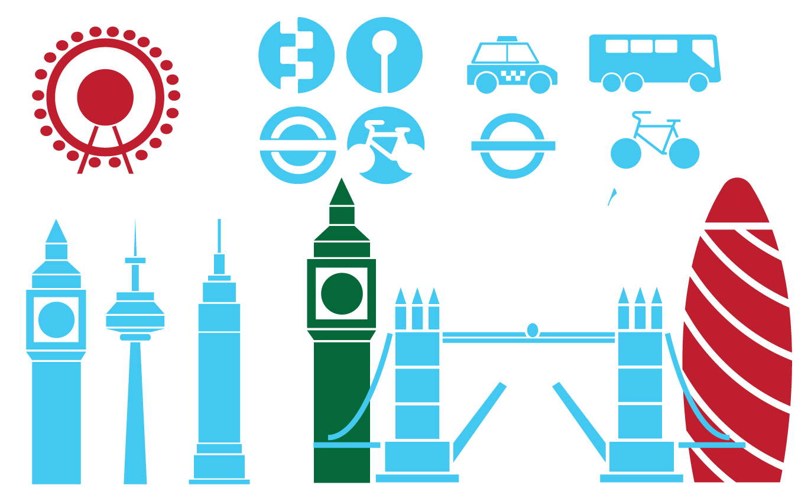
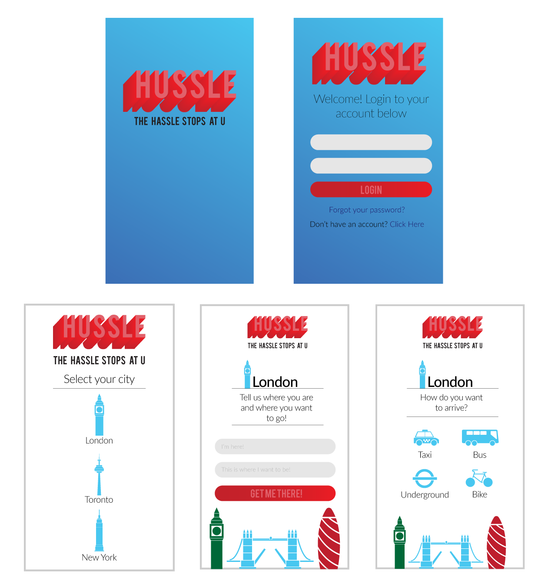
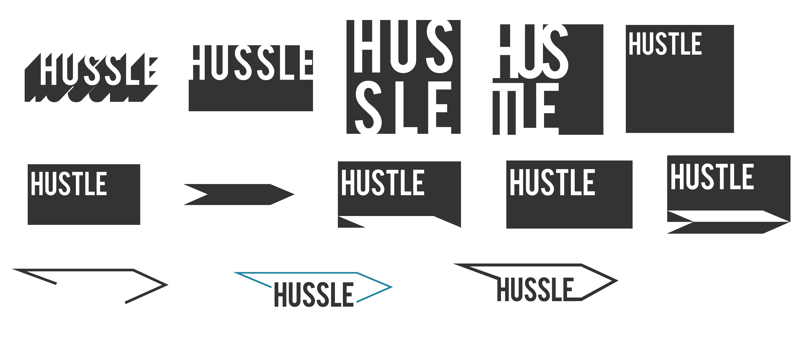
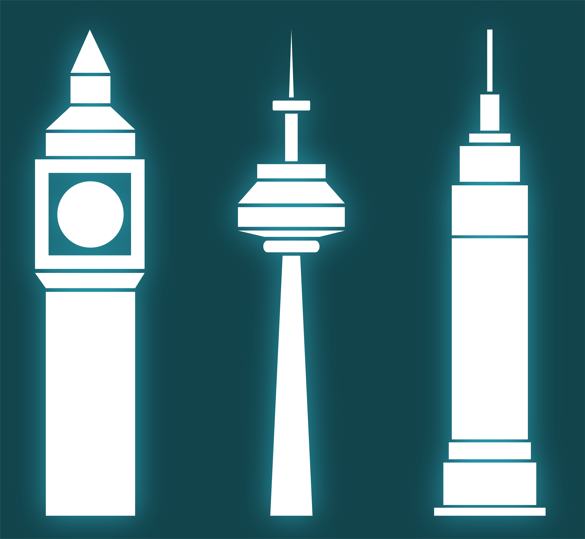
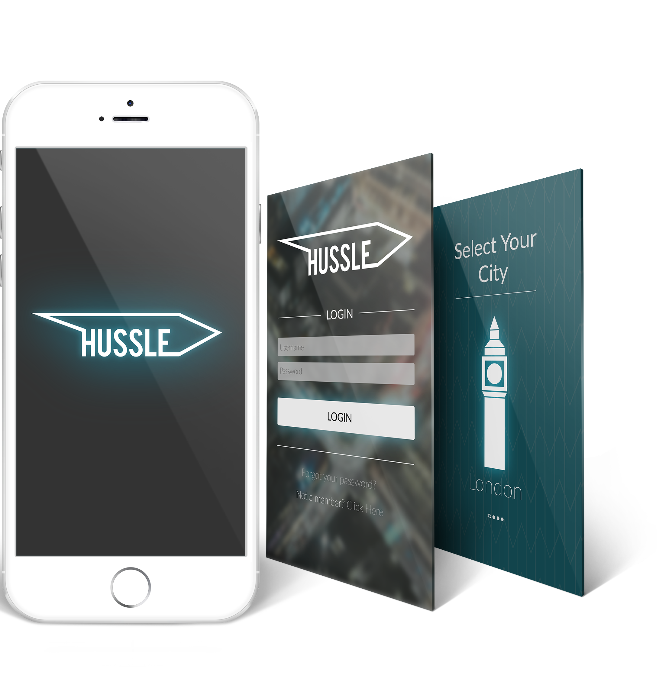
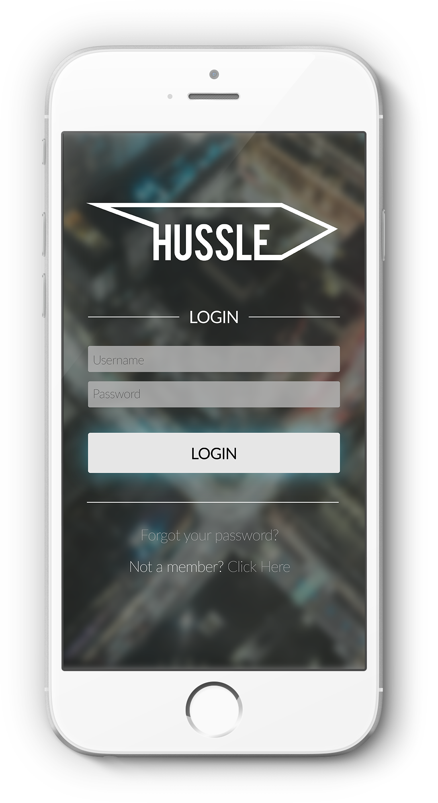
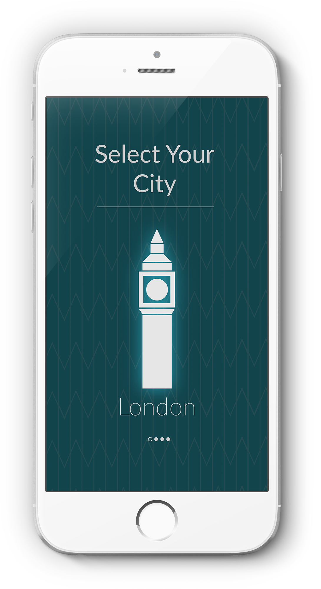
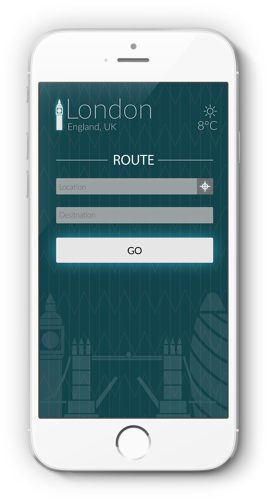

| Overview: The project consisted of producing the user interface for a travel app that could be used to explore different cities. Hussle focused on transportation within cities |
Created: Feb 2017
Skill: UI Design |
Role: Interface Designer, Icon Designer |
|
The start point for this project was to develop a set of icons that could
be used for the app. As the app was based around cities, I developed a set
that consisted of three iconic parts of well-known cities. I created
Big Ben from London, the CN Tower from Toronto, and the Empire State
Building fron New York City. After this I developed icons that could
be used for control within the app itself. These represent different
forms of transport.
The colours chosen reflected the original colour scheme and app design. This was later changed. |
 |
|  | This was the original design for my app UI. After creating it, I didn't feel that it portrayed my style or the intended look of the app. I didn't like the colour pallette I originally used and thought it would be more suited for a kids app. After making this decision, I chose to restrt the design for the interface. |
|
This is the development process for the updated logo I created. At the
top you can see the original logo in white which already was a step
in the right direction for the look of my app. From there the
designs flow into each other as they continue down. Eventually I
arrived at the final logo which I was very pleased with.
Throughout this process I developed the chevron marque. I was anle to extend this visual marque into other aspects of the app including acting as the background as well as being used in the logo. I felt this shape signified moving forward and hustling which is what the app is designed to help people do. |
 |
|  |
These are the updated icons created for Hussle. I created Big Ben, the
CN Tower, and the Empire State Building. They each signify a major
city from around the world and are used to allow users to choose the
city they are currently travelling in.
The icons are made up of basic compound shapes. I liked the idea of simplicity both in colour and shape. This way it doesn’t distract the users attention but still allows people to easily recognise the city. |
|
These are some of the screens mocked up from my app to show how my
UI would look on an actual iOS device.
I am realy pleased wiht the final style and layout of the app from previous versions. It has taken some inspiration from the Uber taxi app which has a sleek and professional look to it as well as being slightly playful and fun in it’s own way. I really liked the glowing luminescent effect on the key buttons and icons. This gave them a distinct look and helps users interact with the correct items. |
 |
Final Outcome
|  |  |  |